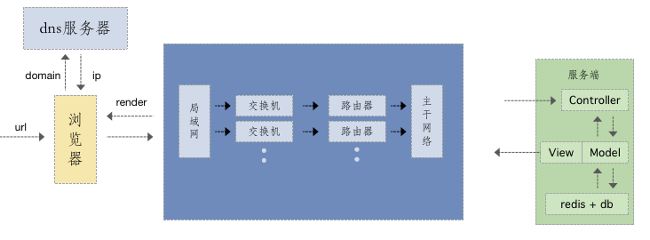

资源合并与压缩-http请求的过程及潜在的性能优化
浏览器的一个请求从发送到返回都经历了什么

思考
- dns是否可以通过缓存减少dns查询时间？
- 网络请求的过程走最近的网络环境？
- 相同的静态资源是否可以缓存？
- 能否减少请求http请求大小？
- 减少http请求
- 服务端渲染
重绘和回流
css会让JavaScript变慢吗
一个线程执行JavaScript
一个线程执行渲染
频繁触发重绘和回流，导致UI渲染频繁，最重导致js变慢啥是重绘和回流
回流
- 当render tree中的一部分或全部因为元素规模尺寸，布局，隐藏等改变需要重新构建，称作为回流（reflow）
- 当页面布局和几何属性变化时，就需要回流
重绘
当render tree中的一些元素需要更新属性，而这些属性只是影响元素外观，风格，而不会影响布局的，比如background-color，则称之为重绘
回流一定会重绘，重绘不一定会回流
触发页面重布局的属性
- 盒子模型相关属性会触发重布局
- 定位属性及浮动会触发页面重布局
- 改变节点内部文字结构会触发重布局
1
2
3
4
5
6
7
8
9width top text-align
height bottom overflow-y
padding left font-weight
margin right overflow
display position font-family
border-width float line-height
border clear vertical-align
min-height white-space
font-size
触发页面重绘的属性
1 | color border-style |
新建DOM过程
1、 获取DOM后分割为多个图层
2、 对每个图层的阶段计算样式结果(recalulate style — 样式重计算)
3、 为每个节点生成图形和位置(Layout— 回流和重布局)
4、 将每个节点绘制填充到图层位置中(Paint setup 和Paint — 重绘)
5、 图层作为纹理上传至gpu
6、 符合多个图层到页面上生成最终屏幕图像(composite layers — 图层重组)
减少重绘和回流
避免重绘回流的css
将频繁重绘和回流的dom元素单独作为独立图层，那么这个dom元素只会影响这个独立图层
如何将DOM创建一个新的图层
1、3D或者透视变化CSS属性(perspective transform)
2、 使用加速视屏解码的 video 节点
3、拥有3D(webGL)上下文或加速的2D上下文的 canvas 节点
4、混合插件(如flash)
5、对自己的opacity做css动画或使用一个动画webkit变换的元素
6、使用加速CSS过滤器的元素(translate3D..)
7、元素有一个包含复合层的后代节点(一个元素拥有一个子元素，该元素在自己的层里)
8、元素有一个z-index较低且包含一个符合层的兄弟元素(该元渲染在符合层上面渲染)
避免重绘回流
1、用translate替代top：top会触发回流而translate不会
2、用opacity替代visibility：visibility会触发重绘而opacity不会
3、不要一条条修改DOM修改样式，可以放在一个class内，替换class
4、离线修改，使用display-none修改元素再显示
5、不要把DOM节点属性值放在一个循环里的变量里（offsetHight， offsetWidth）
6、不使用table布局，可能很小的修改导致整个table重新布局
7、动画实现的速度的选择
8、对于动画新建图层 (git图加上will-change, transform)
9、使用GPU硬件加速(trasform: translateZ, trasform: transform3d(0,0,0))
localStorage
- HTML5设计出来专门用于浏览器存储的
- 大小为5M左右
- 尽在客户端使用，不和服务端通信
- 接口封装比较好
- 浏览器本地缓存方案
SessionStorage
- 会话级别的浏览器存储
- 大小为5M左右
- 仅在客户端使用，不和服务器端通信
- 接口封装较好
- 对于表单信息的维护
indexDB
- IndexedDB 是一种低级API，用于客户端存储大量结构化数据(包括, 文件/ blobs)。该API使用索引来实现对该数据的高性能搜索。虽然 Web Storage 对于存储较少量的数据很有用，但对于存储更大量的结构化数据来说，这种方法不太有用。IndexedDB提供了一个解决方案。
- 为应用创建离线版本
PWA
Progressive Web App, 简称 PWA，是提升 Web App 的体验的一种新方法，能给用户原生应用的体验。
PWA 能做到原生应用的体验不是靠特指某一项技术，而是经过应用一些新技术进行改进，在安全、性能和体验三个方面都有很大提升，PWA 本质上是 Web App，借助一些新技术也具备了 Native App 的一些特性，兼具 Web App 和 Native App 的优点。
PWA 的主要特点包括下面三点：
可靠 - 即使在不稳定的网络环境下，也能瞬间加载并展现
体验 - 快速响应，并且有平滑的动画响应用户的操作
粘性 - 像设备上的原生应用，具有沉浸式的用户体验，用户可以添加到桌面
PWA 本身强调渐进式，并不要求一次性达到安全、性能和体验上的所有要求，开发者可以通过 PWA Checklist 查看现有的特征。
Service Worker
1、使用拦截和处理网络请求能力，实现离线应用
2、使用Service Worker在后台运行同时和页面通信的能力，趋势线大规模后台数据处理
缓存
httpheader
Cache-Control
- max-age=”seconds”
设置缓存存储的最大周期，超过这个时间缓存被认为过期(单位秒)。与Expires相反，时间是相对于请求的时间。 - s-maxage=”seconds”
覆盖max-age 或者 Expires 头，但是仅适用于共享缓存(比如各个代理)，并且私有缓存中它被忽略。 - public
表明响应可以被任何对象（包括：发送请求的客户端，代理服务器，等等）缓存。 - private
表明响应只能被单个用户缓存，不能作为共享缓存（即代理服务器不能缓存它）,可以缓存响应内容。 - no-cache
在发布缓存副本之前，强制高速缓存将请求提交给原始服务器进行验证。 - no-store
缓存不应存储有关客户端请求或服务器响应的任何内容。Expires
- 缓存过期时间，用来指定资源到期时间，是服务器端的具体的时间点
- 告诉浏览器在过期时间前浏览器可以直接从浏览器缓存去数据，无需再次请求
Last-Modified/If-Modified-Since
特点
The Last-Modified 是一个响应首部，其中包含源头服务器认定的资源做出修改的日期及时间。 它通常被用作一个验证器来判断接收到的或者存储的资源是否彼此一致
1、请求浏览器，给到缓存文件，response带有last-modified 给到浏览器存储为last-modified-since
2、浏览器再次请求文件，带有last-modiied-since, 服务器对比last-modified，若过期则给到新的文件，若不过期，则继续使用本地文件缺点
1、某些服务器不能获取精确的修改时间
2、文件修改时间改了，但文件内容却没有改变Etag/If-None-Match
- 文件内容的hash值
- etag——response header
- if-none-match —— request header
- 需要和cache-control一起使用
1
2
3
4
5
6
7
8
9
10
11
12
13---------------------
当浏览器本地没有缓存或者下一层失效时，或者用户点击刷新
\ 200状态 / 浏览器直接去服务器下载最新数据
-------------------
这一层由 last-modified / Etag 控制,当下一层失效时，
\ 304状态 / 或用户点击刷新，浏览器就会发送请求给服务器，如果文件无变
化则返回304
----------------
这层由expires/cache-control控制，expires(http 1.0
\ 200(from disk) / 有效)是绝对时间，cache-control(http1.1版有效)相对
时间，两者都存在，cache-control覆盖expires，没有失效
-------------- 则直接访问自己缓存

服务端性能优化
多层次优化方案
- 构建层模版编译
- 数据无关prerender方式
- 服务端渲染